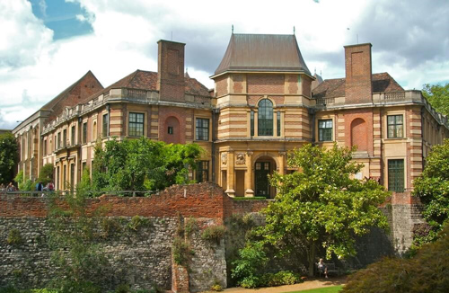
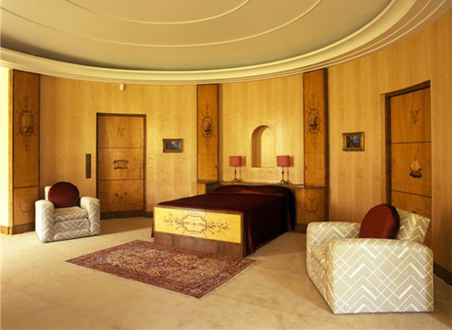
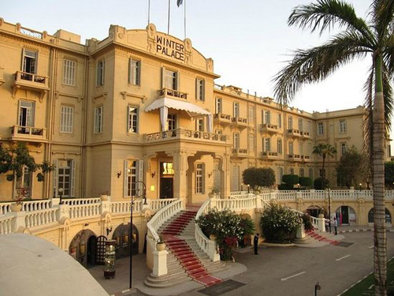
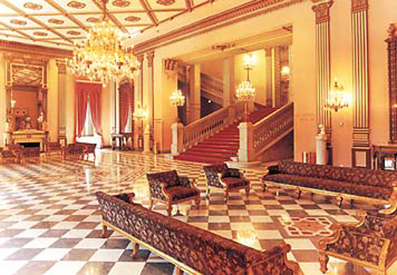
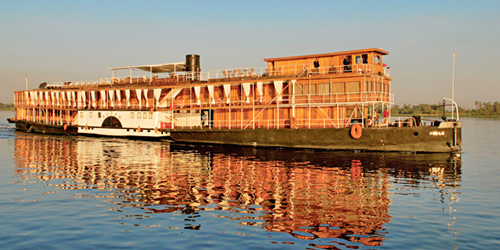
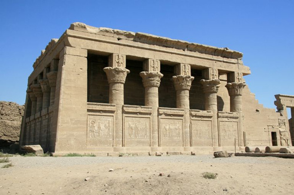
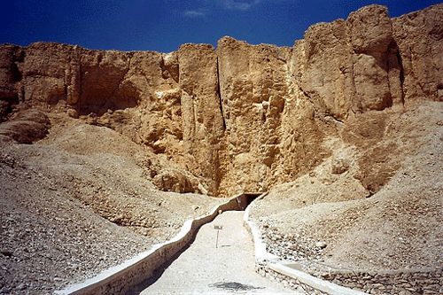

Eltham Palace, London SE9 is used as 'Linnet Doyle's House'. In 1933, Stephen and Virginia Courtauld acquired the lease of the Palace site and restored the Great Hall while building an elaborate home, internally in the Art Deco style.

Bedroom in Eltham Palace. The dramatic Entrance Hall to the Palace was created by the Swedish designer Rolf Engströmer, (seen in 'Three Act Tragedy').

Winter Palace Hotel in Luxor.

The Cairo Marriott Hotel was used for interior shots in the 'Hotel'.

The S.S.Sudan was used as the 'Karnak'.

Dendera Temple.

Valley of the Monkeys.